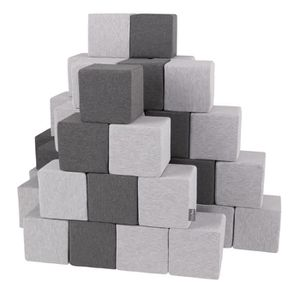

Développez l’imagination avec Kruikube les nouveaux Jeux de construction
Lesjeux de construction Kruikubesont un nouveau concept de jeux de cube en 3D qui permettra à vos enfants de faire évoluer leur imagination. Kruikube à été conçu dans nos laboratoires afin d'optimiser tous les facteurs au bon developpement de l'enfant. Il à été testé et approuvé par de nombreux parents. Les principales caractéristiques de ce jeu sont : Les cubes peuvent être placés n'importe où , ce qui signifie qu'il n'y a aucune limite pour le placement et le mouvement de ces éléments, ils sont très facile à manipuler car ce sont des cubes de 16.18 cm.
Découvrez nos jeux de construction
Faites découvrir l’univers passionnant desjeux de construction Kruikube grâce à nos tout nouveaux cubes que vous pourrez choisir dans de différents matériaux, Bois Acier Plastique Il vous sera possible d'acheter un ou plusieurs cubes et de completer au fur et à mesure la collection de votre enfant.Étant donnné que Kruikube existe dans différentes matieres votre enfant pourra les mélanger à sa guise et selon sa créativité.kruikube ne s'arrete pas juste à dévelloper l'imagination des enfants, mais va aussi lui permettre de tester les sensations thermiques,et les différences de textures. Ce tout nouveau jouet deviendra son objet indispensable ainsi que le votre en vous appercevant des bienfaits que Kruikube apportera devellopement de votre enfant qu il soit petit ou grand. Ces cubes en bois vont donner l'occasion aux enfants de s'amuser avec un ou plusieurs cubes sans avoir besoin d'autres matériaux ou outils que leurs mains et leurs yeux, ainsi que d'exercer sa créativité en utilisant une seule couleur par pièce de jeu, sans être limité par les règles des jeux de cubes de la génération précédente tels que tetris, et autres… Ce jeu sera tres amusant à jouer avec ses amis ou vos frères et sœurs.
Personnalisez vos cubes !

personnalisé vos cubes en boisKruikube afin d'obtenir un jeu personnalisé nous vous proposons la possibilité de faire graver vos cubes avec le prénom de votre ou vos enfants ou bien encore leur personnage préféré. Vous aurez la possibilité de choisir la couleur de la gravure parmi ses 4 couleurs noir, Bleu, violet et rose. c' est une belle idée qui vous permettra de faire un cadeau original à vos enfants ou meme un a ami qui pouurait s'en servir comme presse papier.
Apprendre à lire avec nos cubes alphabet
nous vous proposons également notre serie spéciale cube alphabet afin de permettre la découverte des lettres aux plus petits et les plus grands formeront leur tout premier mots. les lettres seront sur chaque face ce qui permettra à votre enfant de créer toutes sortes de mots. c'est un excellent cadeau pour les bébés et les tout-petits qui aiment écrire, il peut également être utilisé comme outil d'apprentissage et les encourager à pratiquer l'écriture et l'orthographe correctement et en même temps ils s'amuseront à jouer avec leurs amis, parents et frères et sœurs.